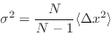

Next: Size Up: Tensor operations Previous: Merge Contents
Slice will cut off a tensor along a given axis by the argument, as
configured in the operation edit dialog. For
example
 . If the tensor is rank one (ie a vector), it is
not necessary to specify the axis.
. If the tensor is rank one (ie a vector), it is
not necessary to specify the axis.
If the slice argument is negative, then it refers to the number of elements from the end of that axis. For example .